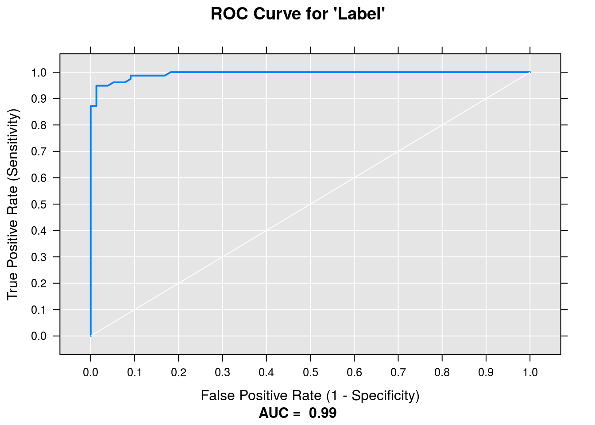
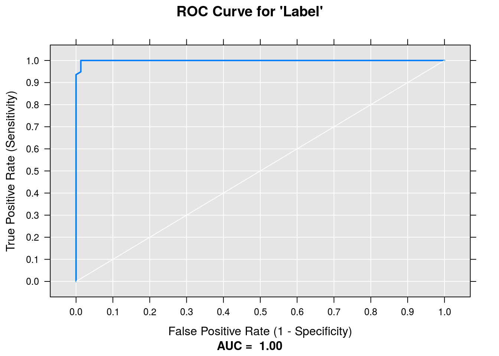

Chapter 7 Transfer Learning with Pre-Trained Deep Neural Network Architectures – The Shallow End of Deep Learning
7.1 Pre-Trained Models
Transfer learning is a pretty incredible method for learning expressive models without having to train a deep architecture from scratch. In some ways, it’s nearly a “free-lunch”: take a pre-built model trained for weeks on a large image corpus, and reuse the features from that model for your domain-specific task.
MicrosoftML ships with a number of pre-trained DNNs on the ImageNet challenge dataset.
AlexNetFeatures <- read.csv(system.file(
"extdata/ImageAnalyticsTestData/featurizeImage_alexnet_output.csv",
package = "MicrosoftML"),
header = FALSE)
ResNet18Features <- read.csv(system.file(
"extdata/ImageAnalyticsTestData/featurizeImage_resnet18_output.csv",
package = "MicrosoftML"),
header = FALSE)
ResNet50Features <- read.csv(system.file(
"extdata/ImageAnalyticsTestData/featurizeImage_resnet50_output.csv",
package = "MicrosoftML"),
header = FALSE)
ResNet101Features <- read.csv(system.file(
"extdata/ImageAnalyticsTestData/featurizeImage_resnet101_output.csv",
package = "MicrosoftML"),
header = FALSE)
lapply(list(AlexNetFeatures, ResNet18Features, ResNet50Features, ResNet101Features),
dim)## [[1]]
## [1] 2 4097
##
## [[2]]
## [1] 2 513
##
## [[3]]
## [1] 2 2049
##
## [[4]]
## [1] 2 20497.2 CMU Faces Dataset
For this notebook, we’ll use the CMU Faces dataset compiled by Tom Mitchell and his students way back in 1999.
# get paths to full-resolution images, regex"[[:alpha:]_]+.pgm"
# see: http://archive.ics.uci.edu/ml/machine-learning-databases/faces-mld/faces.data.html for image resolution info
# prepare training and testing data, extract labels: left VS right
l <- "left"
r <- "right"
imgs_l <- list.files("data/faces",
pattern = paste0(l, "[[:alpha:]_]+.pgm"),
recursive = TRUE, full.names = TRUE)
imgs_r <- list.files("data/faces",
pattern = paste0(r, "[[:alpha:]_]+.pgm"),
recursive = TRUE, full.names = TRUE)
l_l <- length(imgs_l)
l_r <- length(imgs_r)
train_l_l <- ceiling(l_l / 2) #get balanced train and test set, split each class by half
train_l_r <- ceiling(l_r / 2)
trainIndex_l <- sample(l_l, train_l_l)
trainIndex_r <- sample(l_r, train_l_r)
train_df <- data.frame(Path = c(imgs_l[trainIndex_l], imgs_r[trainIndex_r]),
Label = c(rep(TRUE, train_l_l), rep(FALSE, train_l_r)),
stringsAsFactors = FALSE)
test_df <- data.frame(Path = c(imgs_l[-trainIndex_l], imgs_r[-trainIndex_r]),
Label = c(rep(TRUE, l_l-train_l_l), rep(FALSE, l_r-train_l_r)),
stringsAsFactors = FALSE)
train_df <- train_df[sample(nrow(train_df)),]
test_df <- test_df[sample(nrow(test_df)),]
lapply(list(train_df, test_df), dim)## [[1]]
## [1] 157 2
##
## [[2]]
## [1] 155 27.3 On-the Fly Featurization
We can develop features on-the-fly and embed them into any of the MicrosoftML learners. This is especially useful if we want to train on data that is too large to fit in memory, so instead we work in batches.
mlTransform <- list(loadImage(vars = list(Image = "Path")),
resizeImage(vars = "Image",
width = 224, height = 224,
resizingOption = "IsoPad"),
extractPixels(vars = list(Pixels = "Image")),
featurizeImage(var = "Pixels", outVar = "Feature",
dnnModel = "resnet101"))
model <- rxLogisticRegression(Label ~ Feature,
data = train_df,
mlTransforms = mlTransform, mlTransformVars = "Path")## Automatically adding a MinMax normalization transform, use 'norm=Warn' or 'norm=No' to turn this behavior off.
## LBFGS multi-threading will attempt to load dataset into memory. In case of out-of-memory issues, turn off multi-threading by setting trainThreads to 1.
## Warning: Too few instances to use 32 threads, decreasing to 1 thread(s)
## Beginning optimization
## num vars: 2049
## improvement criterion: Mean Improvement
## L1 regularization selected 144 of 2049 weights.
## Not training a calibrator because it is not needed.
## Elapsed time: 00:04:18.1299345
## Elapsed time: 00:00:00.0076987summary(model)## Call:
## rxLogisticRegression(formula = Label ~ Feature, data = train_df,
## mlTransforms = mlTransform, mlTransformVars = "Path")
##
## LogisticRegression (BinaryClassifierTrainer) for: Label~Feature
## Data: train_df
##
##
## First 20 of 144 Non-zero Coefficients:
## (Bias): 0.2561404
## f765: 0.9757374
## f1789: -0.8494654
## f1752: -0.7844995
## f396: 0.6964862
## f1837: -0.6718948
## f1496: -0.614819
## f1173: 0.614722
## f530: -0.6073583
## f78: 0.5863273
## f851: 0.5443665
## f39: -0.5386707
## f1961: -0.5299587
## f1409: -0.4981045
## f529: 0.4914077
## f573: 0.4909203
## f619: -0.4871628
## f2011: 0.4459811
## f779: -0.4267508
## f596: 0.4123578score <- rxPredict(model, test_df, extraVarsToWrite = "Label")## Elapsed time: 00:04:20.7192206sum(score$Label==score$PredictedLabel)/nrow(score)## [1] 0.9612903rxRocCurve("Label","Probability", score)
7.4 Retaining Features
While the above approach is scalable beyond datasets that can fit in memory, it has the drawback of not being reusable. In paricular, we can’t “pull-out” the features we trained on our dataset for later use.
If you would like to retain the features you trained on, you can do so by using the featurizeImage function in MicrosoftML directly. It is analogous to the mlTransforms argumenet above.
rxFeaturize(data = train_df,
outData = "data/train.xdf",
overwrite = TRUE,
mlTransforms = list(loadImage(vars = list(Image = "Path")),
resizeImage(vars = "Image",
width = 224, height = 224,
resizingOption = "IsoPad"),
extractPixels(vars = list(Pixels = "Image")),
featurizeImage(var = "Pixels",
outVar = "Feature",
dnnModel = "resnet18")),
mlTransformVars = c("Path", "Label")) -> train_xdf## Elapsed time: 00:00:22.4899601rxFeaturize(data = test_df, outData = "data/test.xdf", overwrite = TRUE,
mlTransforms = list(loadImage(vars = list(Image = "Path")),
resizeImage(vars = "Image", width = 224, height = 224,
resizingOption = "IsoPad"),
extractPixels(vars = list(Pixels = "Image")),
featurizeImage(var = "Pixels",
outVar = "Feature",
dnnModel = "resnet18")),
mlTransformVars = c("Path", "Label")) -> test_xdf## Elapsed time: 00:00:21.9257951varInfo <- rxGetVarInfo(train_xdf)
features <- paste("Feature", 0:511, sep=".", collapse = " + ")
form <- as.formula(paste("Label", features, sep="~"))
model <- rxLogisticRegression(formula = form, data = train_xdf)## Automatically adding a MinMax normalization transform, use 'norm=Warn' or 'norm=No' to turn this behavior off.
## LBFGS multi-threading will attempt to load dataset into memory. In case of out-of-memory issues, turn off multi-threading by setting trainThreads to 1.
## Warning: Too few instances to use 32 threads, decreasing to 1 thread(s)
## Beginning optimization
## num vars: 513
## improvement criterion: Mean Improvement
## L1 regularization selected 97 of 513 weights.
## Not training a calibrator because it is not needed.
## Elapsed time: 00:00:00.6764841
## Elapsed time: 00:00:00.0022477summary(model)## Call:
## rxLogisticRegression(formula = form, data = train_xdf)
##
## LogisticRegression (BinaryClassifierTrainer) for: Label~Feature.0+Feature.1+Feature.2+Feature.3+Feature.4+Feature.5+Feature.6+Feature.7+Feature.8+Feature.9+Feature.10+Feature.11+Feature.12+Feature.13+Feature.14+Feature.15+Feature.16+Feature.17+Feature.18+Feature.19+Feature.20+Feature.21+Feature.22+Feature.23+Feature.24+Feature.25+Feature.26+Feature.27+Feature.28+Feature.29+Feature.30+Feature.31+Feature.32+Feature.33+Feature.34+Feature.35+Feature.36+Feature.37+Feature.38+Feature.39+Feature.40+Feature.41+Feature.42+Feature.43+Feature.44+Feature.45+Feature.46+Feature.47+Feature.48+Feature.49+Feature.50+Feature.51+Feature.52+Feature.53+Feature.54+Feature.55+Feature.56+Feature.57+Feature.58+Feature.59+Feature.60+Feature.61+Feature.62+Feature.63+Feature.64+Feature.65+Feature.66+Feature.67+Feature.68+Feature.69+Feature.70+Feature.71+Feature.72+Feature.73+Feature.74+Feature.75+Feature.76+Feature.77+Feature.78+Feature.79+Feature.80+Feature.81+Feature.82+Feature.83+Feature.84+Feature.85+Feature.86+Feature.87+Feature.88+Feature.89+Feature.90+Feature.91+Feature.92+Feature.93+Feature.94+Feature.95+Feature.96+Feature.97+Feature.98+Feature.99+Feature.100+Feature.101+Feature.102+Feature.103+Feature.104+Feature.105+Feature.106+Feature.107+Feature.108+Feature.109+Feature.110+Feature.111+Feature.112+Feature.113+Feature.114+Feature.115+Feature.116+Feature.117+Feature.118+Feature.119+Feature.120+Feature.121+Feature.122+Feature.123+Feature.124+Feature.125+Feature.126+Feature.127+Feature.128+Feature.129+Feature.130+Feature.131+Feature.132+Feature.133+Feature.134+Feature.135+Feature.136+Feature.137+Feature.138+Feature.139+Feature.140+Feature.141+Feature.142+Feature.143+Feature.144+Feature.145+Feature.146+Feature.147+Feature.148+Feature.149+Feature.150+Feature.151+Feature.152+Feature.153+Feature.154+Feature.155+Feature.156+Feature.157+Feature.158+Feature.159+Feature.160+Feature.161+Feature.162+Feature.163+Feature.164+Feature.165+Feature.166+Feature.167+Feature.168+Feature.169+Feature.170+Feature.171+Feature.172+Feature.173+Feature.174+Feature.175+Feature.176+Feature.177+Feature.178+Feature.179+Feature.180+Feature.181+Feature.182+Feature.183+Feature.184+Feature.185+Feature.186+Feature.187+Feature.188+Feature.189+Feature.190+Feature.191+Feature.192+Feature.193+Feature.194+Feature.195+Feature.196+Feature.197+Feature.198+Feature.199+Feature.200+Feature.201+Feature.202+Feature.203+Feature.204+Feature.205+Feature.206+Feature.207+Feature.208+Feature.209+Feature.210+Feature.211+Feature.212+Feature.213+Feature.214+Feature.215+Feature.216+Feature.217+Feature.218+Feature.219+Feature.220+Feature.221+Feature.222+Feature.223+Feature.224+Feature.225+Feature.226+Feature.227+Feature.228+Feature.229+Feature.230+Feature.231+Feature.232+Feature.233+Feature.234+Feature.235+Feature.236+Feature.237+Feature.238+Feature.239+Feature.240+Feature.241+Feature.242+Feature.243+Feature.244+Feature.245+Feature.246+Feature.247+Feature.248+Feature.249+Feature.250+Feature.251+Feature.252+Feature.253+Feature.254+Feature.255+Feature.256+Feature.257+Feature.258+Feature.259+Feature.260+Feature.261+Feature.262+Feature.263+Feature.264+Feature.265+Feature.266+Feature.267+Feature.268+Feature.269+Feature.270+Feature.271+Feature.272+Feature.273+Feature.274+Feature.275+Feature.276+Feature.277+Feature.278+Feature.279+Feature.280+Feature.281+Feature.282+Feature.283+Feature.284+Feature.285+Feature.286+Feature.287+Feature.288+Feature.289+Feature.290+Feature.291+Feature.292+Feature.293+Feature.294+Feature.295+Feature.296+Feature.297+Feature.298+Feature.299+Feature.300+Feature.301+Feature.302+Feature.303+Feature.304+Feature.305+Feature.306+Feature.307+Feature.308+Feature.309+Feature.310+Feature.311+Feature.312+Feature.313+Feature.314+Feature.315+Feature.316+Feature.317+Feature.318+Feature.319+Feature.320+Feature.321+Feature.322+Feature.323+Feature.324+Feature.325+Feature.326+Feature.327+Feature.328+Feature.329+Feature.330+Feature.331+Feature.332+Feature.333+Feature.334+Feature.335+Feature.336+Feature.337+Feature.338+Feature.339+Feature.340+Feature.341+Feature.342+Feature.343+Feature.344+Feature.345+Feature.346+Feature.347+Feature.348+Feature.349+Feature.350+Feature.351+Feature.352+Feature.353+Feature.354+Feature.355+Feature.356+Feature.357+Feature.358+Feature.359+Feature.360+Feature.361+Feature.362+Feature.363+Feature.364+Feature.365+Feature.366+Feature.367+Feature.368+Feature.369+Feature.370+Feature.371+Feature.372+Feature.373+Feature.374+Feature.375+Feature.376+Feature.377+Feature.378+Feature.379+Feature.380+Feature.381+Feature.382+Feature.383+Feature.384+Feature.385+Feature.386+Feature.387+Feature.388+Feature.389+Feature.390+Feature.391+Feature.392+Feature.393+Feature.394+Feature.395+Feature.396+Feature.397+Feature.398+Feature.399+Feature.400+Feature.401+Feature.402+Feature.403+Feature.404+Feature.405+Feature.406+Feature.407+Feature.408+Feature.409+Feature.410+Feature.411+Feature.412+Feature.413+Feature.414+Feature.415+Feature.416+Feature.417+Feature.418+Feature.419+Feature.420+Feature.421+Feature.422+Feature.423+Feature.424+Feature.425+Feature.426+Feature.427+Feature.428+Feature.429+Feature.430+Feature.431+Feature.432+Feature.433+Feature.434+Feature.435+Feature.436+Feature.437+Feature.438+Feature.439+Feature.440+Feature.441+Feature.442+Feature.443+Feature.444+Feature.445+Feature.446+Feature.447+Feature.448+Feature.449+Feature.450+Feature.451+Feature.452+Feature.453+Feature.454+Feature.455+Feature.456+Feature.457+Feature.458+Feature.459+Feature.460+Feature.461+Feature.462+Feature.463+Feature.464+Feature.465+Feature.466+Feature.467+Feature.468+Feature.469+Feature.470+Feature.471+Feature.472+Feature.473+Feature.474+Feature.475+Feature.476+Feature.477+Feature.478+Feature.479+Feature.480+Feature.481+Feature.482+Feature.483+Feature.484+Feature.485+Feature.486+Feature.487+Feature.488+Feature.489+Feature.490+Feature.491+Feature.492+Feature.493+Feature.494+Feature.495+Feature.496+Feature.497+Feature.498+Feature.499+Feature.500+Feature.501+Feature.502+Feature.503+Feature.504+Feature.505+Feature.506+Feature.507+Feature.508+Feature.509+Feature.510+Feature.511
## Data: train_xdf (RxXdfData Data Source)
## File name: data/train.xdf
##
##
## First 20 of 97 Non-zero Coefficients:
## (Bias): 0.2091156
## Feature.487: -1.327465
## Feature.431: 0.9092103
## Feature.460: -0.8586729
## Feature.157: 0.7992205
## Feature.47: -0.7986112
## Feature.511: -0.6897881
## Feature.315: -0.6197985
## Feature.270: 0.6049663
## Feature.233: -0.5948368
## Feature.62: 0.5754997
## Feature.456: 0.56534
## Feature.293: 0.5637971
## Feature.269: -0.5151423
## Feature.441: -0.493934
## Feature.88: 0.483808
## Feature.406: -0.4684003
## Feature.93: 0.465048
## Feature.145: -0.4564239
## Feature.224: -0.4489715score <-rxPredict(model, test_xdf, extraVarsToWrite = "Label")## Elapsed time: 00:00:00.1704341sum(score$Label==score$PredictedLabel)/nrow(score)## [1] 0.9870968rxRocCurve("Label","Probability",score)